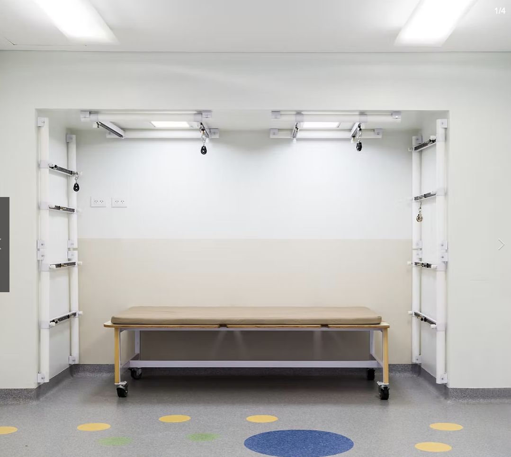
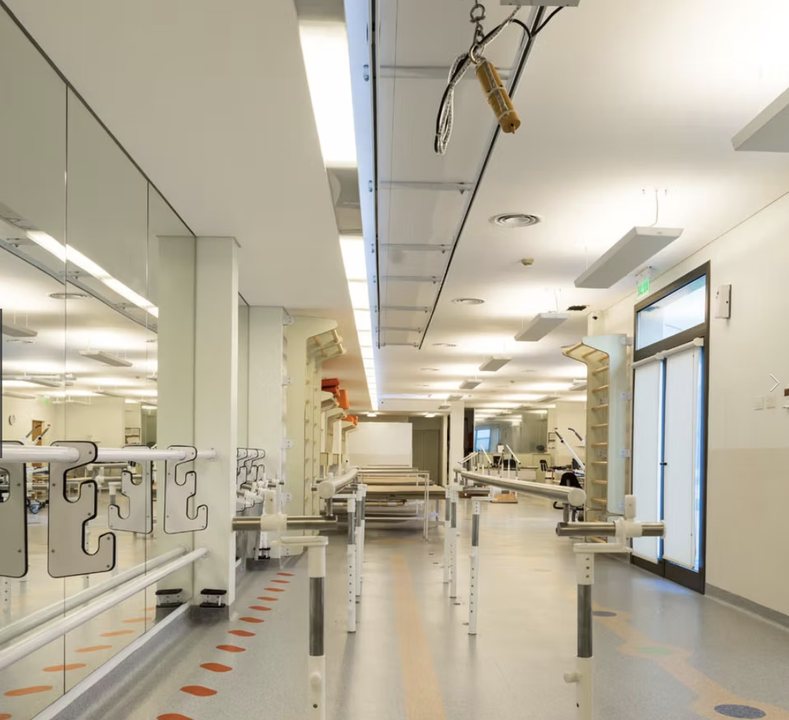
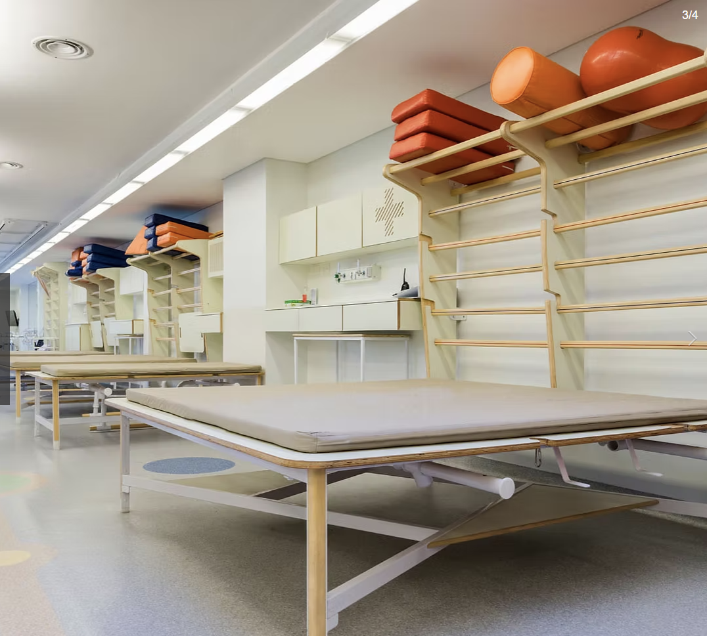
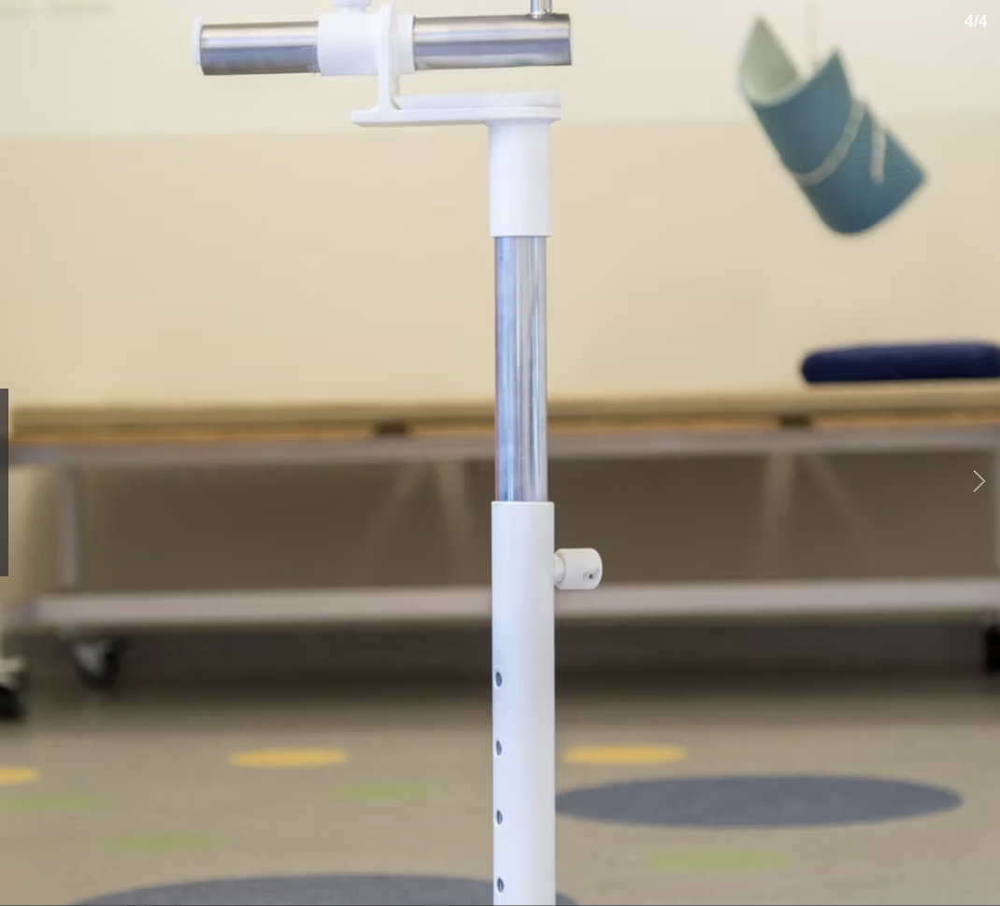

Patients were calling the parallel bars a cage. Physios had stopped using them entirely; not because they weren’t clinically useful, but because they were making people give up. A research-led redesign of Ciarec Clinic’s rehabilitation gymnasium changed how the space itself felt, and what patients believed was possible inside it.
This project was completed in 2016 as a final-year thesis engagement at the University of Buenos Aires, in co-leadership with Studio ‘La Feliz’ and in partnership with Ciarec Clinic. It is one of the earliest examples of the human-centred, research-before-solution approach that forms the foundation of SHiFT with Purpose’s methodology today.
Ciarec Clinic in Buenos Aires treats patients through some of the most difficult moments of their lives: post-surgery recovery, relearning how to walk, rebuilding strength and movement after trauma. The rehabilitation gymnasium is where most of that work happens.
From a clinical standpoint, the equipment was functional. But patient experience research told a different story. The space felt chaotic, intimidating, and; in the case of the parallel bar walking system; actively demoralising. Physios called it the cage. Patients called it the cage. It had become so associated with the worst moments of recovery that clinicians had stopped using it even when it would have helped.
The question the project set out to answer was not “how do we update the equipment?” It was: how might we design a better rehabilitation experience so that patients feel more motivated during their sessions and achieve a better, healthier recovery?
Ciarec Rehabilitation Clinic
Buenos Aires, Argentina
Why this matters: The same research-before-solution principle that shaped this project in 2016 is at the core of every SHiFT engagement today. The context changes; the commitment to understanding before designing does not.
Before any design decisions were made, interviews with patients and specialists mapped the full rehabilitation experience; from the moment of an accident through to returning home. What surfaced was not a problem with the equipment. It was a problem with what the space communicated.
“When you first arrive to the clinic you feel afraid of everything; you have to trust people you don’t know. When I met Maria, my physio, it was love at first sight, and I started to think, maybe I can...”
Rehabilitation patient, Ciarec Clinic“At first you don’t trust 100% in the process. You feel you’re done; but you don’t want to disappoint your family.”
Rehabilitation patient, Ciarec Clinic“It is like if we were animals in a zoo, caged. Physios say that we have to imagine that we are not there. But have you seen the cage?”
Rehabilitation patient, referring to the parallel bar walking system“We finally decided to quit using it, because even though it’s very useful, patients get depressed and it becomes counterproductive.”
Physiotherapist, Ciarec Clinic, on discontinuing the parallel bar systemThe patient journey map traced the full arc from accident through surgery, rehabilitation, and return home; tracking emotions, feelings, and the specific touchpoints where trust was built or lost. The critical finding: motivation was not a personal trait patients either had or lacked. It was a design outcome. The space could either build it or destroy it.
The guiding design concept that emerged from the research: efficiency through motivation. If patients were more motivated, they would work harder, trust the process further, and recover more effectively. The space itself needed to become part of the therapeutic intervention.
The project followed a full design thinking framework across five phases, with clinical staff and patients involved at every stage.
The research phase began with direct observation of the existing gym: how it was used, how patients moved through it, where they hesitated, what they avoided. Interviews with both patients and physiotherapists surfaced the emotional reality of the space; the fear on arrival, the tentative first trust, the specific moments where motivation collapsed or compounded.
A detailed patient journey map documented the full rehabilitation arc; from the shock of an accident and the uncertainty of surgery, through to the gradual rebuilding of confidence in the gym, and the anxiety of returning home. The map tracked feelings, emotions, and the specific interactions that shifted patients from fear toward self-belief. The defining design concept, “efficiency through motivation,” came directly from this analysis: the gym was not neutral. It was either helping patients recover, or it was working against them.
Two validation rounds produced increasingly refined designs. The first prototype modelled the full gymnasium layout in three dimensions: open plan, colour-coded zones, reorganised equipment placement, and new walking infrastructure that replaced the cage with a system designed around dignity and visible progress. The second prototype refined the parallel walking system and the floor marker system, testing the experience of moving through the space with patients before the build.
The designs were not delivered as a report and left behind. They were built. The clinic implemented the full redesign, including the new walking system, the flexible exercise infrastructure, the wall-mounted modular storage, and the colour-coded floor markers that let patients see their own progress as they moved through the space. Every element had been tested before it was built.
“It’s great to see them when they feel they are progressing. So when we can ask them to walk around the gym picking things up, or following the markers we put on the floor; you see it on their faces. That’s when they start to believe they can do this.”
The redesigned Ciarec gymnasium as it was implemented; from the treatment bays to the walking system to the modular equipment storage.




This project was completed in 2016, years before SHiFT with Purpose existed as a business. But it contains every principle that drives the work today.
Research before solution. Clinical and lived expertise valued equally. Prototypes tested with the people who would actually use them before anything was built. A design brief that started with how people felt rather than how the space looked. And a commitment to implementation; not a document handed over, but a space actually built and changed.
The insight that surfaced from this project; that motivation is a design outcome, not a personality trait; translated directly into the way SHiFT with Purpose now approaches customer and employee experience in purpose-led organisations. When the experience is designed well, people engage. When it isn’t, they disengage; and no amount of encouragement fills that gap.
The parallel bars in the original gym weren’t failing because they were bad equipment. They were failing because no one had ever asked what it felt like to stand inside them. That question; what does this experience feel like from the inside?; is still the first question SHiFT with Purpose asks in every engagement.
The same research-led, human-centred methodology that redesigned this gym is available to your organisation. Let’s start with a conversation.
Book a Free SHiFT Call →